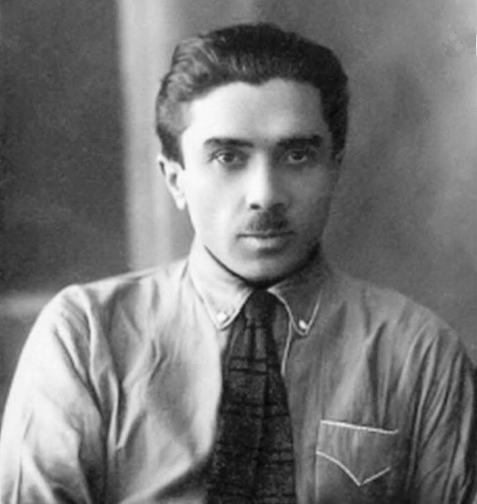

Микола Хвильовий
(1893-1933)
Мико́ла Хвильови́й — український прозаїк, поет, публіцист, політичний діяч, один з основоположників пореволюційної української прози. Один з найвідоміших представників розстріляного відродження, ідейний натхненник гасла «Геть від Москви!»
Дізнатися більше